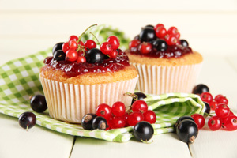

About Us
Tiers of Joy opened its doors for the first time in 2014. Their fully trained pastry chef, Stephanie Kavanagh, along with Robert Kelly and Georgina Kane decided that Stephanie's delicious signature cupcakes needed to be shared with everyone and therefore decided to establish and run their own cafe. They knew what they wanted: to create a homely and welcoming space which offered the best sweet treats and selection of coffees in Dublin, and the finest birthday cakes, scones and brownies in the business. Not to mention, of course, the most sublime wedding cakes too!
Tiers of Joy quickly established a great reputation and is flourishing since opening their doors. Everything is baked and prepared fresh on the premises; and only the best local ingredients are used, the best coffee beans in their coffee machines, fine Belgian chocolate in their chocolate fudge cake and muffins, and of course the freshest Bramley's Irish apples in their apple crumbles. The fabulous signature cupcakes draw customers from far and wide. Visit Tiers of Joy on 123 Fake Lane, in beautiful Dublin City, where you can relax on the outdoor terrace with a coffee and watch the world go by; or simply curl up inside with tea and a slice of warm apple pie. Welcome to Tiers of Joy... and we hope you enjoy your visit!